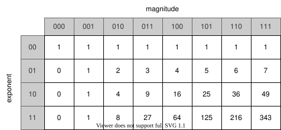

Appendix G — Bonus Material
Each chapter in this book is designed to be teachable in one classroom hour. This appendix presents material that extends core ideas but would break that attention budget.
G.1 Using Function Attributes
This material extends Chapter 6.
Since functions are objects, they can have attributes. The function dir (short for “directory”) returns a list of their names:
def example():
"Docstring for example."
print("in example")
print(dir(example))['__annotations__', '__builtins__', '__call__', '__class__', \
'__closure__', '__code__', '__defaults__', '__delattr__', \
'__dict__', '__dir__', '__doc__', '__eq__', '__format__', '__ge__', \
'__get__', '__getattribute__', '__getstate__', '__globals__', \
'__gt__', '__hash__', '__init__', '__init_subclass__', \
'__kwdefaults__', '__le__', '__lt__', '__module__', '__name__', \
'__ne__', '__new__', '__qualname__', '__reduce__', '__reduce_ex__', \
'__repr__', '__setattr__', '__sizeof__', '__str__', \
'__subclasshook__']
Most programmers never need to use most of these, but __name__ holds the function’s original name and __doc__ holds its docstring:
print("docstring:", example.__doc__)
print("name:", example.__name__)docstring: Docstring for example.
name: example
We can modify the test runner of Chapter 6 to use the function’s __name__ attribute in reports instead of the key in the globals dictionary:
def run_tests(prefix):
for (name, func) in globals().items():
if name.startswith(prefix):
try:
func()
print(func.__name__, "passed")
except AssertionError:
print(func.__name__, "failed")
except Exception:
print(func.__name__, "had error")
run_tests("test_")test_sign_negative passed
test_sign_positive passed
test_sign_zero failed
test_sign_error had error
More usefully, we can say that if a test function’s docstring contains the string "test:skip" then we should skip the test, while "test:fail" means we expect this test to fail. Let’s rewrite our tests to show this off:
TEST_FAIL = "test:fail"
TEST_SKIP = "test:skip"
def test_sign_negative():
"test:skip"
assert sign(-3) == -1
def test_sign_positive():
assert sign(19) == 1
def test_sign_zero():
"test:fail"
assert sign(0) == 0
def test_sign_error():
"""Expect an error."""
assert sgn(1) == 1and then modify run_tests to look for these strings and act accordingly:
def run_tests(prefix):
all_names = [n for n in globals() if n.startswith(prefix)]
for name in all_names:
func = globals()[name]
try:
if func.__doc__ and TEST_SKIP in func.__doc__:
print(f"skip: {name}")
else:
func()
print(f"pass: {name}")
except AssertionError as e:
if TEST_FAIL in func.__doc__:
print(f"pass (expected failure): {name}")
else:
print(f"fail: {name} {str(e)}")
except Exception as e:
doc = f"/{func.__doc__}" if func.__doc__ else ""
print(f"error: {name}{doc} {str(e)}")
run_tests("test_")The output is now:
skip: test_sign_negative
pass: test_sign_positive
pass (expected failure): test_sign_zero
error: test_sign_error/Expect an error. name 'sgn' is not defined
Instead of (ab)using docstrings like this, we can instead add our own attributes to functions. Let’s say that if a function has an attribute called skip with the value True then the function is to be skipped, while if it has an attribute called fail whose value is True then the test is expected to fail. Our tests become:
def test_sign_negative():
assert sign(-3) == -1
test_sign_negative.skip = True
def test_sign_positive():
assert sign(19) == 1
def test_sign_zero():
assert sign(0) == 0
test_sign_zero.fail = True
def test_sign_error():
assert sgn(1) == 1We can write a helper function called classify to classify tests. Note that it uses hasattr to check if an attribute is present before trying to get its value:
def classify(func):
if hasattr(func, "skip") and func.skip:
return "skip"
if hasattr(func, "fail") and func.fail:
return "fail"
return "run"Finally, our test runner becomes:
def run_tests(prefix):
all_names = [n for n in globals() if n.startswith(prefix)]
for name in all_names:
func = globals()[name]
kind = classify(func)
try:
if kind == "skip":
print(f"skip: {name}")
else:
func()
print(f"pass: {name}")
except AssertionError as e:
if kind == "fail":
print(f"pass (expected failure): {name}")
else:
print(f"fail: {name} {str(e)}")
except Exception as e:
print(f"error: {name} {str(e)}")
run_tests("test_")G.2 Lazy Evaluation
This material extends Chapter 7.
One way to evaluate a design is to ask how extensible it is. The answer for our interpreter is now, “Pretty easily.” For example, we can add a comment “operation” that does nothing and returns None simply by writing do_comment function:
def do_comment(env, args):
"""Ignore instructions.
["comment" "text"] => None
"""
return NoneAn if statement is a bit more complex. If its first argument is true, it evaluates and returns its second argument (the “if” branch). Otherwise, it evaluates and returns its second argument (the “else” branch):
def do_if(env, args):
"""Make a choice: only one sub-expression is evaluated.
["if" C A B] => A if C else B
"""
assert len(args) == 3
cond = do(env, args[0])
choice = args[1] if cond else args[2]
return do(env, choice)As we said in Chapter 8, this is called lazy evaluation to distinguish it from the more usual eager evaluation that evaluates everything up front. do_if only evaluates what it absolutely needs to; most languages do this so that we can safely write things like:
if x != 0:
return 1/x
else:
return NoneIf the language always evaluated both branches, then the code shown above would fail whenever x was zero, even though it’s supposed to handle that case. In this case it might seem obvious what the language should do, but most languages use lazy evaluation for and and or as well so that expressions like:
thing and thing.partwill produce None if thing is None and reference.part if it isn’t.
G.3 Extension
This material extends Chapter 13.
It’s easy to check a single style rule by extending NodeVisitor, but what if we want to check dozens of rules? Traversing the AST dozens of times would be inefficient. And what if we want people to be able to add their own rules? Inheritance is the wrong tool for this: if several people each create their own NodeVisitor with a visit_Name method, we’d have to inherit from all those classes and then have the new class’s visit_Name call up to all of its parents’ equivalent methods.
One way around this is to inject methods into classes after they have been defined. The code fragment below creates a new class called BlankNodeVisitor that doesn’t add anything to NodeVisitor, then uses setattr to add a method to it after it has been defined (Figure G.1):
class BlankNodeVisitor(ast.NodeVisitor):
pass
def print_name(self, node):
print(node.id)
setattr(BlankNodeVisitor, "visit_Name", print_name)This trick works because classes and objects are just specialized dictionaries (for some large value of “just”). If we create an object of BlankNodeVisitor and call its visit method:
with open(sys.argv[1], "r") as reader:
source = reader.read()
tree = ast.parse(source)
finder = BlankNodeVisitor()
finder.visit(tree)then the inherited generic_visit method does what it always does. When it encounters a Name node, it looks in the object for something called visit_Name. Since it doesn’t find anything, it looks in the object’s class for something with that name, finds our injected method, and calls it.
With a bit more work, we could have our injected method save and then call whatever visit_Name method was there when it was added to the class, but we would quickly run into a problem. As we’ve seen in earlier examples, the methods that handle nodes are responsible for deciding whether and when to recurse into those nodes’ children. If we pile method on top of one another, then either each one is going to trigger recursion (so we recurse many times) or there will have to be some way for each one to signal whether it did that so that other methods don’t.
To avoid this complication, most systems use a different approach. Consider this class:
Handler = namedtuple("Handler", ["func", "data"])
class RegisterNodeVisitor(ast.NodeVisitor):
def __init__(self):
super().__init__()
self.handlers = {}
def add_handler(self, nodeType, func, data=None):
handler = Handler(func, data)
if nodeType not in self.handlers:
self.handlers[nodeType] = []
self.handlers[nodeType].append(handler)
def visit_Name(self, node):
for handler in self.handlers.get(ast.Name, []):
handler.func(node, handler.data)The add_handler method takes three parameters: the type of node a callback function is meant to handle, the function itself, and an optional extra piece of data to pass to the function along with an AST node. It saves the handler function and the data in a lookup table indexed by the type of node the function is meant to handle. Each of the methods inherited from NodeVisitor then looks up handlers for its node type and runs them.
So what do handlers look like? Each one is a function that takes a node and some data as input and does whatever it’s supposed to do:
def count_names(node, counter):
counter[node.id] += 1Setting up the visitor is a bit more complicated, since we have to create and register the handler:
with open(sys.argv[1], "r") as reader:
source = reader.read()
tree = ast.parse(source)
finder = RegisterNodeVisitor()
counter = Counter()
finder.add_handler(ast.Name, count_names, counter)
finder.visit(tree)
print(counter)However, we can now register as many handlers as we want for each kind of node.
G.4 Tracing Inheritance
This material extends Chapter 13.
In order to keep track of the code we wrote for this book, we built a tool that reports which methods are defined or redefined in which classes. To show how it works, this file that defines four classes, each of which defines or redefines some methods:
class Parent:
def red(self):
pass
def green(self):
pass
class LeftChild(Parent):
def green(self):
pass
def blue(self):
pass
class RightChild(Parent):
def red(self):
pass
def blue(self):
pass
class GrandChild(LeftChild):
def red(self):
pass
def blue(self):
pass
def orange(self):
passAs in Chapter 13, our class’s constructor creates a stack to keep track of where we are. It also creates a couple of dictionaries to keep track of how classes inherit from each other and the methods each class defines:
When we encounter a new class definition, we push its name on the stack, record its parents, and create an empty set to hold its methods:
When we encounter a function definition, the first thing we do is check the stack. If it’s empty, we’re looking at a top-level function rather than a method, so there’s nothing for us to do. (We actually should recurse through the function’s children, since it’s possible to define classes inside functions, but we’ll leave as an exercise.) If this function definition is inside a class, on the other hand, we add its name to our records:
Once we’re done searching the AST, we print out a table of the classes and methods we’ve seen (Table G.1). We could make this display easier to read—for example, we could sort the classes from parent to child and display methods in the order they were first defined—but none of that requires us to inspect the AST.
GrandChild |
LeftChild |
Parent |
RightChild |
|
|---|---|---|---|---|
blue |
X | X | X | |
green |
X | X | ||
orange |
X | |||
red |
X | X | X |
G.5 Inspecting Functions
This material extends Chapter 15.
The implementation of dataframe filtering in Chapter 15 was somewhat brittle. A better implementation of filtering would make use of the fact that Python’s inspect module lets us examine objects in memory. In particular, inspect.signature can tell us what parameters a function takes:
import inspect
def example(first, second):
pass
sig = inspect.signature(example)
print("signature:", sig)
print("type:", type(sig))
print("names:", sig.parameters)
print("parameters:", list(sig.parameters.keys()))signature: (first, second)
type: <class 'inspect.Signature'>
names: OrderedDict([('first', <Parameter "first">), ('second', \
<Parameter "second">)])
parameters: ['first', 'second']
If, for example, the user wants to compare the red and blue columns of a dataframe, they can give us a function that has two parameters called red and blue. We can then use those parameter names to figure out which columns we need from the dataframe.
G.6 User-Defined Classes
This material extends Chapter 16.
The persistence framework of Chapter 16 only handles built-in data types, but can easily be extended to handle user-defined classes as well. To start, we refactor the code so that the save method doesn’t get any larger:
The method to handle built-in types is:
and the one that handles aliases is:
None of this code is new: we’ve just moved things into methods to make each piece easier to understand.
So how does a class indicate that it can be saved and loaded by our framework? Our options are:
Require it to inherit from a base class that we provide so that we can use
isinstanceto check if an object is persistable. This approach is used in strictly-typed languages like Java, but method #2 below is considered more Pythonic.Require it to implement a method with a specific name and signature without deriving from a particular base class. This approach is called duck typing: if it walks like a duck and quacks like a duck, it’s a duck. Since option #1 would require users to write this method anyway, it’s the one we’ll choose.
Require users to register a helper class that knows how to save and load objects of the class we’re interested in. This approach is also commonly used in strictly-typed languages as a way of adding persistence after the fact without disrupting the class hierarchy.
To implement option #2, we specify that if a class has a method called to_dict, we will call that to get the object’s contents as a dictionary and then persist that dictionary. Before doing that, though, we will save a line indicating that this dictionary should be used to reconstruct an object of a particular class:
Loading user-defined classes requires more work because we have to map class names back to actual classes. (We could also use introspection to find all the classes in the program and build a lookup table of the ones with the right method.) We start by modifying the loader’s constructor to take zero or more extension classes as arguments and then build a name-to-class lookup table from them:
The load method then looks for aliases, built-in types, and extensions in that order. Instead of using a chain of if statements we loop over the methods that handle these cases. If a method decides that it can handle the incoming data it returns a result; if it can’t, it raises a KeyError exception, and if none of the methods handle a case we fail:
The code to handle built-ins and aliases is copied from our previous work and modified to raise KeyError:
The method that handles extensions checks that the value on the line just read indicates an extension, then reads the dictionary containing the object’s contents from the input stream and uses it to build an instance of the right class:
Here’s a class that defines the required method:
class Parent:
def __init__(self, name):
self.name = name
def to_dict(self):
return {"name": self.name}and here’s a test to make sure everything works:
def test_extend_extension_class():
fixture = Parent("subject")
writer = StringIO()
Save(writer).save(fixture)
reader = StringIO(writer.getvalue())
result = Load(reader, Parent).load()
assert isinstance(result, Parent)
assert result.name == fixture.nameG.7 Floating Point Numbers
This material extends Chapter 17.
The rules for storing floating point numbers make those for Unicode look simple. The root of the problem is that we cannot represent an infinite number of real values with a finite set of bit patterns. And no matter what values we represent, there will be an infinite number of values between each of them that we can’t. The explanation that follows is simplified to keep it manageable; please read (Goldberg 1991) for more detail.
Floating point numbers are represented by a sign, a mantissa, and an exponent. In a 32-bit word the IEEE 754 standard calls for 1 bit of sign, 23 bits for the mantissa, and 8 bits for the exponent. We will illustrate how it works using a much smaller representation: no sign, 3 bits for the mantissa, and 2 for the exponent. Figure G.2 shows the values this scheme can represent.

The IEEE standard avoids the redundancy in this representation by shifting things around. Even with that, though, formats like this can’t represent a lot of values: for example, ours can store 8 and 10 but not 9. This is exactly like the problem hand calculators have with fractions like 1/3: in decimal, we have to round that to 0.3333 or 0.3334.
But if this scheme has no representation for 9 then \(8+1\) must be stored as either 8 or 10. What should \(8+1+1\) be? If we add from the left, \((8+1)+1\) is \(8+1\) is 8, but if we add from the right, \(8+(1+1)\) is \(8+2\) is 10. Changing the order of operations makes the difference between right and wrong.
The authors of numerical libraries spend a lot of time worrying about things like this. In this case sorting the values and adding them from smallest to largest gives the best chance of getting the best possible answer. In other situations, like inverting a matrix, the rules are much more complicated.
Another observation about our number line is that while the values are unevenly spaced, the relative spacing between each set of values stays the same: the first group is separated by 1, then the separation becomes 2, then 4, and so on. This observation leads to a couple of useful definitions:
The absolute error in an approximation is the absolute value of the difference between the approximation and the actual value.
The relative error is the ratio of the absolute error to the absolute value we’re approximating.
For example, being off by 1 in approximating 8+1 and 56+1 is the same absolute error, but the relative error is larger in the first case than in the second. Relative error is almost always more useful than absolute: it makes little sense to say that we’re off by a hundredth when the value in question is a billionth.
One implication of this is that we should never compare floating point numbers with == or != because two numbers calculated in different ways will probably not have exactly the same bits. It’s safe to use <, >=, and other orderings, though, since they don’t depend on being the same down to the last bit.
If we do want to compare floating point numbers we can use something like the approx class from pytest which checks whether two numbers are within some tolerance of each other. A completely different approach is to use something like the fractions module, which (as its name suggests) uses numerators and denominators to avoid some precision issues. This post describes one clever use of the module.
G.8 Big and Little Endian
This material extends Chapter 17.
Suppose we want to store a 32-bit integer in memory. As Figure G.3 shows, we can order its four bytes in two different ways. Little-endian order stores the least significant bits of integer at the first (lowest) address in memory, while big-endian order stores the most significant bits first.
Modern Intel processors use little-endian order, but as this article explains, some other processors (and most network protocols) use big-endian order. There are pros and cons to both, which we won’t go into here. What you do need to know is that if you move data from one architecture to another, it’s your responsibility to flip the bytes around, because the machine doesn’t know what the bytes mean. This is such a pain that the struct module and other libraries like it will do things for you if you ask it to. If you’re using struct, the first character of a format string optionally indicates the byte order (Table G.2).
struct package endian indicators.
| Character | Byte order | Size | Alignment |
|---|---|---|---|
@ |
native | native | native |
= |
native | standard | none |
< |
little | endian | standard none |
> |
big | endian | standard none |
! |
network | standard | none |
G.9 Generating Test Cases
This material extends Chapter 20.
Theorem provers like Z3 and PicoSAT are far more powerful than most programmers realize. Borrowing an example from Andreas Zeller, we can use theorem provers to generate test cases. Suppose we have a function that classifies triangles as equilateral, scalene, or isosceles. We can set up some integer variables:
A = Int("A")
B = Int("B")
C = Int("C")
lengths = (A > 0, B > 0, C > 0)and then ask it to create an equilateral triangle based solely on the definition:
equilateral = And(A == B, B == C, C == A)
solver = Solver()
solver.add(lengths)
solver.add(equilateral)
print("equilateral", solver.check(), solver.model())equilateral sat [C = 1, B = 1, A = 1]
The same technique can generate a test case for scalene triangles:
scalene = And(A != B, B != C, C != A)
solver = Solver()
solver.add(lengths)
solver.add(scalene)
print("scalene", solver.check(), solver.model())scalene sat [C = 3, A = 1, B = 2]
and isosceles triangles:
isosceles = Or(
And(A == B, C != A),
And(A == B, B != C),
And(A != B, B == C)
)
solver = Solver()
solver.add(lengths)
solver.add(isosceles)
print("isosceles", solver.check(), solver.model())isosceles sat [C = 2, A = 1, B = 2]